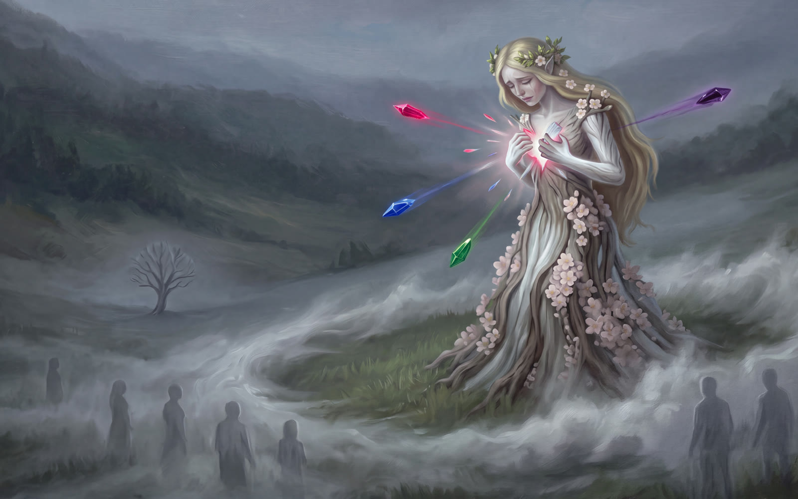
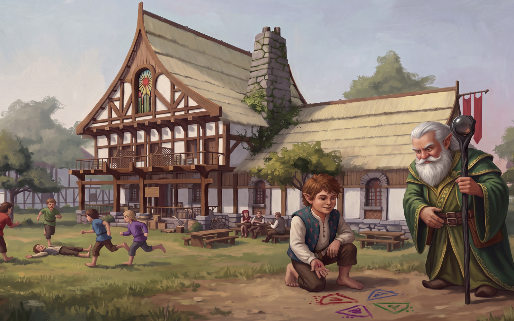
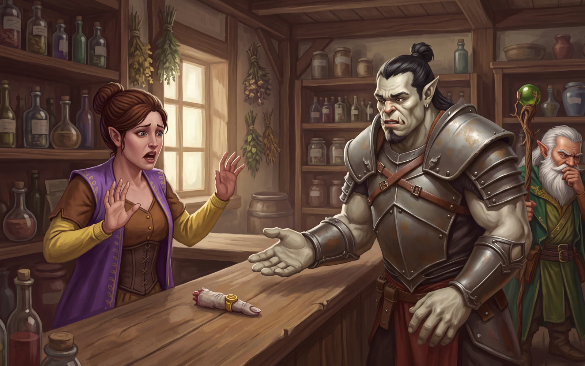
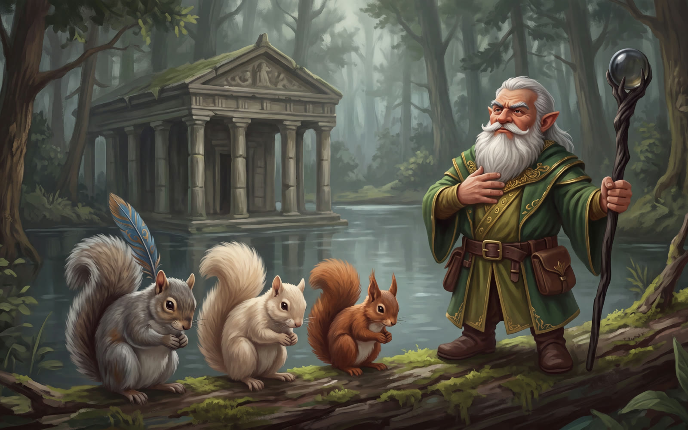
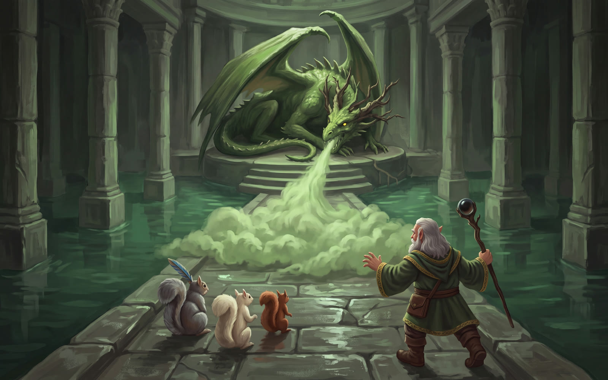
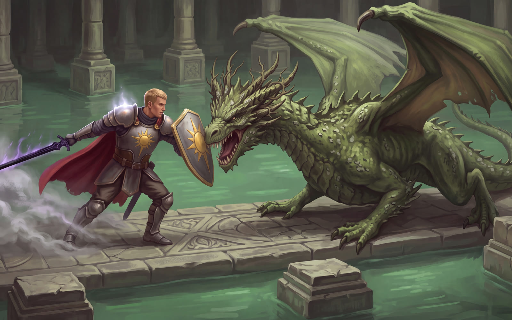
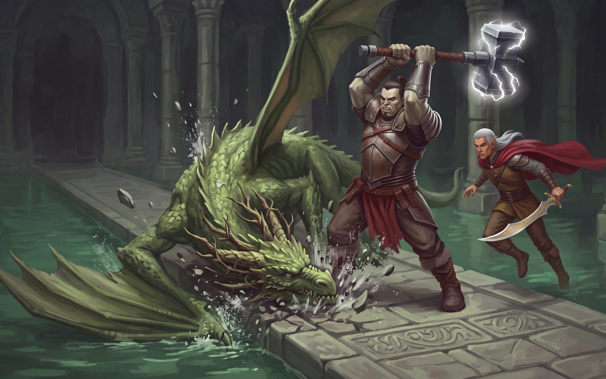
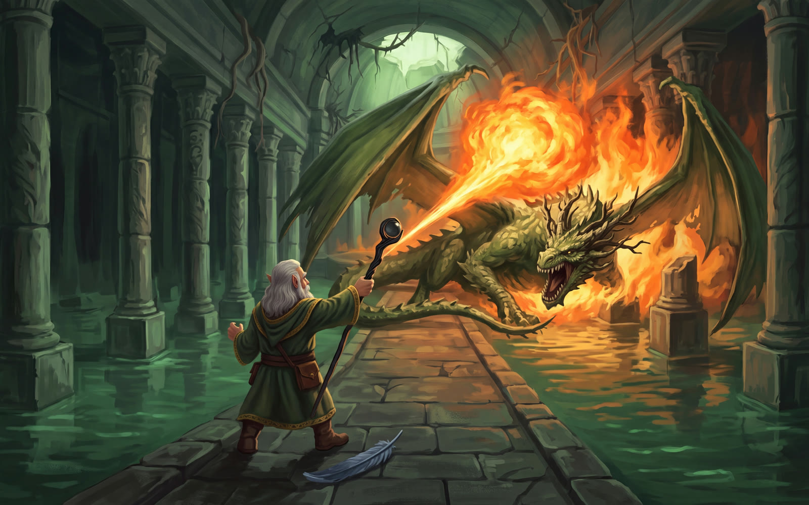

The Broken Heart of Greenrest — Session 8
22 September 2026
The third dream woke the whole of Greenrest. Every soul in town watched the dryad's lover refuse her, watched her wait at the edge of the fog until she gave up, and watched her tear her heart into four — and by breakfast the mayor was asking questions, the children had invented a game called The Breaking, and Selma's tonic had stopped working. The party followed Sera's map to a temple drowned in a forest lake, went in with three squirrels who worship Gren, and fought the green dragon Bramblemaw across his flooded hall. The squirrels did not survive his breath. The dragon did not survive Gren's answer. The fourth and last piece of the heart is theirs.
The inn gave them the usual welcome — beer on Ambrose, and a common room that stared at them the way people stare at celebrities without ever coming over to say hello. Jetten's moonstone glowed bright green as they drifted off, and all four of them were back on the hillside for the third time. They were not alone there.

Invictus woke with a doubt, and said it out loud. The town was prospering on the dryad's captivity; set her free and it might all come apart. He admitted he no longer seemed to have the same moral compass — perhaps she deserved to be there. Jetten would not have it: "It's not right to let her remain enslaved, Invictus." Gren pointed out that the breaking had been her own doing, and that the man in the dream had said a life is for spending. The matter was left there, for now.
Mayor Oswin Applewhite was waiting downstairs, grey with lack of sleep and lit up with it: "I saw you. You were on the hill." All four of them — and half the town had seen them too. The waitress had dreamed it and could not settle; it was as if the explosion had got into her mind. Ambrose set three orange juices on the table with shaking hands and walked back to the bar without a word.
Invictus gave the mayor the careful version: a vision of something long past, and a suspicion that it lay underneath the town's endless summer. Oswin reached the rest on his own — "She was offering him eternal summer, eternal life, and he refused. It seems we might be the beneficiaries of that." He asked whether they had seen these gems before, and did not get an answer. The elders would be meeting that day.
Invictus told him about the Temple of Shar and how badly its acolytes had wanted the dryad kept where she was. Gren added that the merchant who sold body parts had been a regular in Greenrest — and Morgash set the finger, signet ring and all, on the breakfast table. "Sir, there's children here." It went back in the pack. Told the party were going after a green dragon, Oswin hoped it was an evil one; Gren assured him that a good dragon would simply talk and have a cup of tea.
Pooled together, the party's dragon-lore came up just short of complete, but it covered the essentials: green dragons breathe poison, charm and corrupt, hoard treasure, keep to forests, and are at home in the water.
Outside, Pip had drawn four wedges in the dirt in berry juice — red, blue, purple and green. "Those are the gems that I dreamed about. Everybody sees them. I haven't had dreams in so long." Across the field the children were playing a game they had invented that morning. They call it The Breaking: one child falls down, and four others run away in four directions, each in a shirt of red, green, blue or purple. The grown-ups did not like it at all.

Selma was not well. Her tonic was failing; she was trying a double dose; and she had dreamed as well — "I saw the mist roll out like a tide. I've never dreamed like this in so long. The whole town is dreaming again."
The party sold her the last of the temple's treasures, bought a Potion of Poison Resistance for every one of them, three Potions of Fire Breath for the front line, and more healing potions. Invictus swapped Aid out of his prayers for Protection from Poison.
Then Morgash offered Selma "a piece of jewelry." She reached for it, realised what it was, and dropped it. "That's his finger? Is he still alive?" He was already dead, Morgash assured her, and Morgash had not been the one to kill him — he had only brought the finger so she could rest easy. Selma thanked him, and pressed a Potion of Superior Healing into his hand on the house. Gren muttered about aiding and abetting all the way out the door. That potion would save a life before the day was out.

Sera's map led southwest to a forest lake and a temple sunk halfway into it, the water long since risen over its floors — the perfect place for a dragon. Gren cast Speak with Animals on the way in, and three squirrels came out of the trees to meet him. One was Pudgy, the temple squirrel, with Longshadow's peryton feather fixed proudly behind his head; the others were his friends Pinenut, a darker squirrel, and Honeysuckle, a pale one.
"Oh, it's the mighty warlord of the wood! All of the squirrels throughout the entire forest know of the great Gren."
Gren required that they first pay him proper obeisance. All three bowed, back and forth, Pudgy's feather dipping with every bow. Their intelligence was brief and confident: the big green one sleeps at the far end on the shiny warm thing, and the water is bad, so don't drink it. They would come in with him, they said, and guard him.

Honeysuckle hopscotched across the stepping-stones and showed them a secret way through a fountain's mouth. The doors beyond were locked — they had been open last time, the squirrels insisted — and nobody had thought to buy thieves' tools. Jetten's sharp eyes found a hand-carved seam in the stone and a hidden door onto a collapsed tunnel, and Pudgy, who is not built for this, squeezed through the rubble anyway. He was gone a very long time. He came back delighted: "There's a hallway on the other side. You are a mighty Gren. How did you know?"
Morgash found the next carved door. Behind it, something large and green and dripping lurched straight for them. Gren's Bless settled over the fighters and Invictus wrapped himself in the inky aura of Death Armor. Jetten marked it with Hunter's Mark and put two arrows in. Morgash charged on an Adrenaline Rush and the Maul of Momentum knocked it flat — twice. It swung a crackling tendril at him and missed; his Riposte answered with a blow that shook it to the roots. Gren touched Invictus with Light — may it guide his path — and Invictus bashed it down again and cut it twice. Then Jetten's shortsword went through the plant-matter and the whole thing crumbled at his feet. A Shambling Mound, reduced to a heap of vegetables.
The next doors opened on a horned, tiefling-looking druid — "Intruders!" — and a giant crocodile almost too big for the doorway. Jetten's arrows went into the druid. Gren's Sorcerous Burst went wide, and from somewhere nearby Pudgy giggled. "Oh! Warlord Gren. Sorry!"
The crocodile clamped its jaws on Invictus and held him fast. His Death Armor bit it back. Still in its mouth, he slammed his shield into its snout and knocked it flat, then cut it twice with Midnight. The druid's eyes glowed an unearthly green — "Must serve the master" — and the floor around them sprouted Spike Growth. Morgash waded through the thorns anyway and hammered the crocodile. Jetten's next arrow was perfect: a Dreadful Strike through the druid's guard. He held on to his spell through it. The next arrow put him down.
Gren's Fire Bolt found the crocodile with the kind of shot that could not have missed if he had tried. The crocodile bit Invictus one more time — and died of it, the Death Armor finishing what the paladin had started.
Pudgy scratched the next locked door open. Gren wrapped himself in the Tideheart's Death Ward; the healing went round. A maze of dead ends, a room of chains and pulleys — one lever rusted solid, two freshly oiled — and a pull that made a very promising sound. Pinenut ran back with the news: the bar across the big doors was gone. Poison resistance and antitoxin went down, and Invictus drank his fire. "Master Gren, be careful! That's where we saw the dragon last time. You lead — we'll be right behind you, sir."
Both doors swung open on a long causeway across still green water. Giant crocodiles drifted below, uninterested. At the far end, on the old dais, the dragon was resting. He lifted his horned head and spoke in hissing Draconic — "Come for my treasure, eh? You'll die instead."
He moved first. He came up the causeway, drew one enormous breath, and let it go. A wall of poison rolled down the stones. The heroes staggered through it — Gren barely touched, thanks to the Tideheart, Morgash shrugging off the worst, Jetten and Invictus failing to get clear of it.

The squirrels were right behind Gren, as they had promised. Pinenut, Honeysuckle and Pudgy did not come out of the cloud.
Morgash drank his resistance and went to Sera's old longbow. The first arrow went wide; a Precision Attack dragged it back onto the dragon. The second struck true. A cloud of Noxious Miasma settled on Jetten and ate at his armour.
Invictus stepped into the water, and the nearest crocodile came suddenly alert. So he was not there any more. Misty Step put him right in front of the dragon. Midnight bit. His shield came round and smashed into the dragon's face, and Bramblemaw went down on the stones. Midnight bit again.

The dragon lunged back, and Sap spoiled the swing. Jetten's arrow hit; the next one went nowhere. Then Bramblemaw reached into Jetten's head with Mind Spike, and Jetten dropped. Gren's Healing Word had him back up before he hit the water, and Gren's quick read of the magic marked it as a spell, not a gift of the blood. Bless went out again.
The dragon's claws caught Invictus and drew blood; the Death Armor drew some back. Bramblemaw took to the air, and Invictus struck him as he passed and bashed him out of the sky — and Legendary Resistance let the dragon refuse the fall. Morgash's arrows found nothing. Invictus breathed fire on him. Jetten, with Bless nudging a shot home by a hair, hit hard and shouted at him in Draconic: "Stop with the tricks, dragon! Come and fight! What's your name?" No answer came. Gren wrapped the dragon in Slow, and again Legendary Resistance spat the spell back out — but that was two he would not get back.
Then Morgash got close. The first swing missed. The second landed with the whole weight of the maul behind it, and the Topple took the dragon's legs out from under him. Action Surge. Two more blows into a dragon on the ground. For the first time, Bramblemaw looked hurt.

The dragon answered with his mind again. Mind Spike dropped Invictus where he stood, and even the Death Armor could not steady his first breath at death's door. Jetten cut with Goldthorn and caught a claw for it. Gren's Healing Word brought Invictus back up. The Wand of Magic Missiles sang five times. Gren's Counterspell met the dragon's next thought and the dragon brushed it aside — but Jetten kept his feet.
Bramblemaw pulled back through a pike-thrust and a missed swing of Goldthorn, turned, and breathed again. This time Jetten and Invictus both went down.
Morgash did not hesitate. He poured Selma's Potion of Superior Healing — the price of one severed finger — down Invictus's throat and hauled him back from the dark. Then he stepped into the dragon's space and put him on the ground again, and the maul sizzled with light as he swung it again, and again, and again. The dragon pounced on Gren. Invictus, on his feet but out of reach, spent two small points of Lay on Hands on Jetten — just enough to bring him up. "Those two hit points are paying off," he said, when Jetten shrugged off the next poisonous cloud. Jetten cut, and cut, and missed. The dragon came down on Gren with the best strike he had made all night and left the gnome standing on almost nothing.
Gren raised the Vesper Staff. Careful Spell. Fireball. "This is for Honeysuckle, Pinenut and Pudgy, you son of a—"

The dragon twisted away from the worst of it. It did not matter. The fire took Bramblemaw, and he did not get up. A crocodile caught in the blast thrashed away scorched, and with the dragon's hold on them gone, the crocodiles simply swam off into the dark water and disappeared.
They rested in the rooms where the dragon's thralls had slept, among old druidic gear. Behind a door to the north lay a glowing green heart, and Invictus picked it up.
"A quarter of a heart, turned to crystal: venom green, bright and vivid and faintly poisonous-looking, the size of two cupped hands, with the chambering and the sheared-off vessels still there inside the stone like flaws in a gem. It is warm — warmer than the air — and it beats, slowly, faintly, the light inside it moving out through the facets with every beat… It is the exact green of the dragon that hoards it, which is either a coincidence or isn't — and the Wyrmwood has grown briar around it the way a body grows scar tissue."
Holding it showed him a vision: a beautiful green woman, glowing white, leaves crowning her head, weeping; her hands closing over her own chest; the heart bursting; a grey, leafless tree where she had stood; a single faint heartbeat. Invictus turned it over in his hands for the others to see. Once between dawns, it can raise the dead.
"Let's go raise Pudgy!" said Gren at once. Pudgy was his only worshipper — practically his head priest. Invictus asked instead which heart could bring back his family. Only the whole one, if Harrow Vane told the truth: four true resurrections, if the four pieces are ever joined. They have all four now. Gren's feel for magic told him where it would have to be done — together, at the source. At the tree.
And Invictus said the thing nobody else was ready to hear: "I already know the answer, because this sword has been whispering to me."